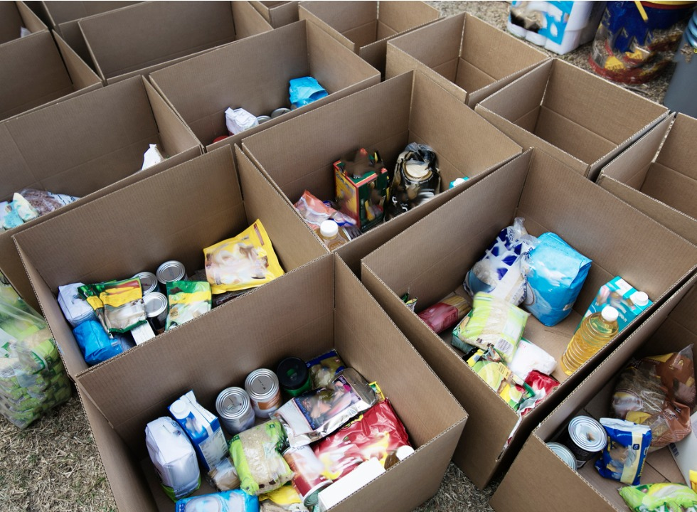

Bem vindo ao Conexão alimentar!
"Conectando corações generosos com mãos necessitadas, uma doação de cada vez."
"Em nossa plataforma, a generosidade é canalizada para seu propósito mais nobre. Cada doação representa um compromisso com a justiça social e a solidariedade. Convidamo-lo a unir-se a nós nessa missão de apoio e transformação. Juntos, podemos verdadeiramente impactar vidas."

O que fazemos?
Nosso site fica responsável pela triagem e realocação das doações. Sabendo quais locais têm a necessidade maior e assim encaminhando suas doações.
Quem somos?
Uma empresa criada com a vontade e necessidade de ajudar ao próximo que viu em seus conhecimentos a necessidade de se mobilizar de alguma forma.
Nossa visão
Buscamos sempre a melhora e o diferencial, sempre tentando fazer o certo e ajudar o maior número de pessoas possíveis.